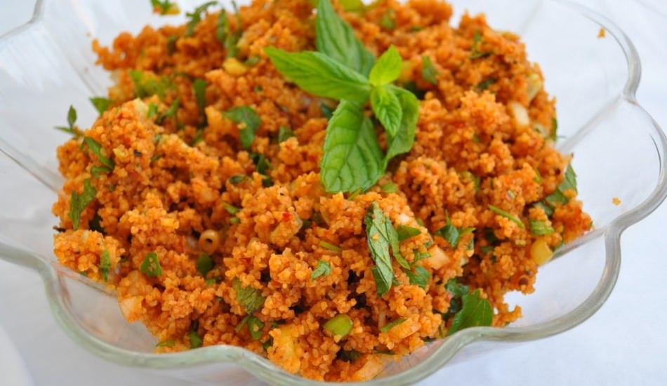

Kısır Tarifi|Tarif Günlüğüm
KISIR TARİFİ

MALZEMELER
- 2 su bardağı ince bulgur
- 1 su bardağı sıcak su
- 1 yemek kaşığı domates salçası
- 1 yemek kaşığı biber salçası
- 3 yemek kaşığı zeytinyağ
- 1 adet limon suyu
- 2 yemek kaşığı nar ekşisi
- 10 dal taze soğan
- 1 demet maydanoz
- 10 yaprak taze nane
- 2 adet domates
- Baharatlar
HAZIRLANIŞI
- İlk olarak bir kabın içerisine bulgur koyup üzerine kaynar su ekleyelim bulgurların şişmesi için üzerini kapatıp beklemeye alalım.
- Bu sırada yeşillikleri güzelce yıkayalım.
- Bulgurlar şiştikten sonra üzerine domates ve biber salçasını ekledikten sonra güzelce karıştıralım.
- Yeşillikleri ve domatesi de doğradıktan sonra bulgurların üstüne ilave edelim.
- Son olarak zeytinyağ ve baharatları ekleyerek güzelce karıştıralım.
- AFİYET OLSUN...